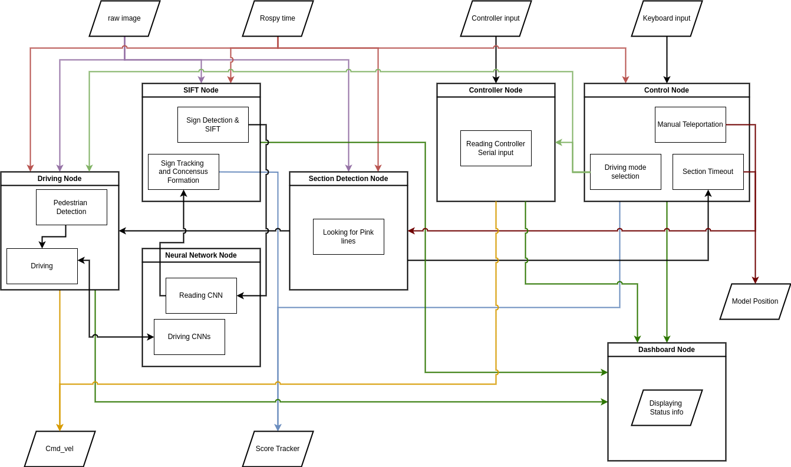
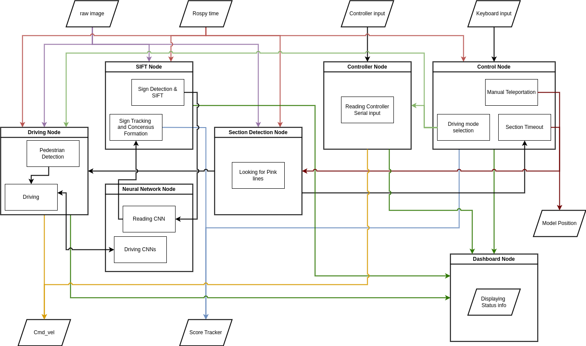

Advanced Tele-operation Redesign — 7-DoF Legacy Manipulator
- Re-architected operator-in-the-loop pipeline with an STM32 H7 + FreeRTOS controller running four independent UART buses.
- Added real-time gravity compensation, null-space regulation, and bidirectional force feedback.
- Cut round-trip latency 35 ms → < 10 ms and reached a 500 Hz closed-loop rate.
 
